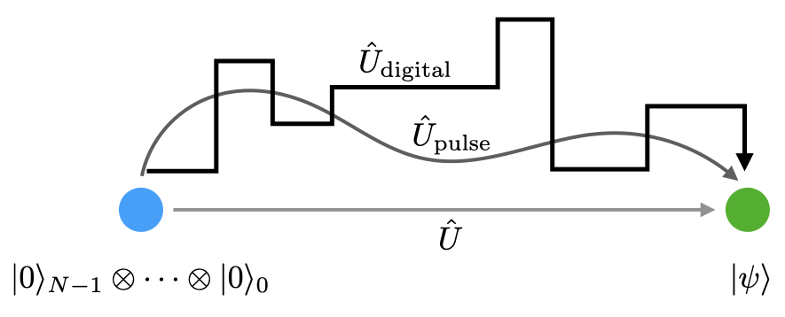
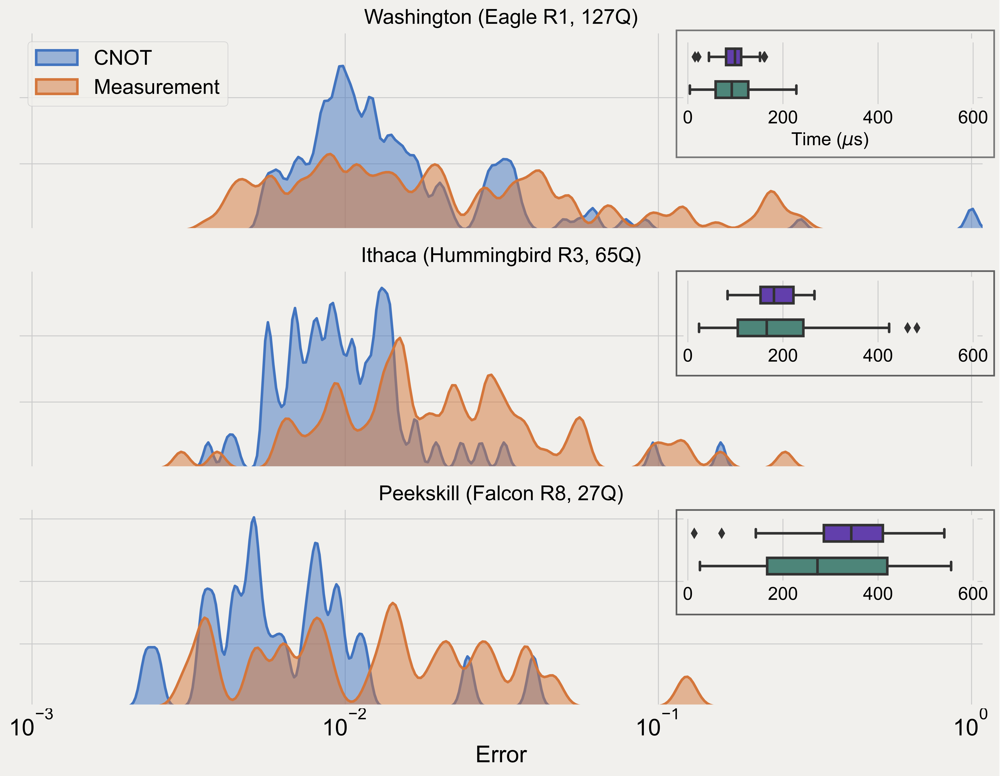

Circuit compilation for hardware#
In our use of the Qiskit runtime, we have completely abstracted away all the details of running on IBM Quantum hardware. However, while at some point users of quantum hardware will be able to ignore the intricacies of the platform they are running on, currently, understanding what goes on within the Runtime is still necessary for achieving optimal results.
In this notebook, we will look at compiling quantum circuits defined on virtual qubits to the physical qubits on a real quantum device.
Setup#
Here we load the modules needed for the rest of the notebook, as well as our locally stored IBM Quantum account.
import numpy as np
# Base Qiskit imports
from qiskit import *
# Circuits from circuit library
from qiskit.circuit.library import QFT, EfficientSU2
# IBM Provider and Runtime
from qiskit_ibm_provider import IBMProvider
from qiskit_ibm_runtime import QiskitRuntimeService, Sampler, Options
# Plotting tools
import matplotlib.pyplot as plt
try:
plt.style.use('quantum-light')
except:
pass
%config InlineBackend.figure_format = 'retina'
provider = IBMProvider()
service = QiskitRuntimeService()
Lets grab a 27-qubit system (this will make diagrams a bit easier to follow)
provider_backend = provider.get_backend('ibm_canberra')
backend = service.get_backend('ibm_canberra')
Background#
To understand how a circuit is mapped to a quantum device works, we will consider a six-qubit BV circuit that requires \(5\)-partite connectivity; at least one qubit requires 2Q gates between 5 other qubits. As we will see, this circuit will require several transformations to map onto an IBM Quantum system. Understanding a subset of the full range of transformations that can be applied to a circuit via the Qiskit transpile function is the goal of this notebook. These transformations are performed internally by the Qiskit Runtime, and knowing what is going on is important for achieving optimal results.
def bv_ones_circs(N):
"""Generate a Bernstein-Vazarani (BV) circuit for an all-ones bit-string
Parameters:
N (int): Number of qubits in circuit. I.e. a bit-string of length N-1
Returns:
QuantumCircuit: BV circuit
"""
qc = QuantumCircuit(N, N-1)
qc.x(N-1)
qc.h(range(N))
qc.cx(range(N-1), N-1)
qc.h(range(N-1))
qc.barrier()
qc.measure(range(N-1), range(N-1))
return qc
N = 6
qc = bv_ones_circs(N)
qc.draw('mpl')
We have submitted this circuit to hardware many times already via the Runtime. Let us try to do the same using backend.run():
bv_job = provider_backend.run(qc, shots=int(1e4))
Attempting to retrieve the result leads to problems:
bv_job.result()
---------------------------------------------------------------------------
IBMJobFailureError Traceback (most recent call last)
Cell In[48], line 1
----> 1 bv_job.result()
File ~/mambaforge/envs/qiskit/lib/python3.11/site-packages/qiskit_ibm_provider/job/ibm_circuit_job.py:250, in IBMCircuitJob.result(self, timeout, refresh)
248 if self._status == JobStatus.ERROR:
249 error_message = self.error_message()
--> 250 raise IBMJobFailureError(f"Job failed: " f"{error_message}")
251 self._retrieve_result(refresh=refresh)
252 return self._result
IBMJobFailureError: 'Job failed: Instruction h is not supported'
sampler = Sampler(backend)
bv_job2 = sampler.run(qc, shots=int(1e4))
bv_job2.result()
SamplerResult(quasi_dists=[{0: 0.006118555163654723, 1: 0.009779522281544831, 2: 0.0010624785100383726, 3: 0.0010925395532566645, 4: 0.0018999659190570399, 5: 0.017270835701084133, 6: 0.0009822485027634379, 7: 0.006166641446972479, 8: -2.2374707962465154e-05, 9: 0.0007143159153160227, 10: 0.000493444727923226, 11: 0.0018085741104976734, 12: 0.00040964728733720244, 13: 0.012719285203670765, 14: 0.0010625368772757447, 15: 0.02418562878437437, 16: 0.0005348983894254184, 17: 0.001232213166762825, 18: 0.0006836687381836401, 19: 0.002302104324436434, 20: 0.00030501454245360606, 21: 0.0030315599055743105, 22: 0.0005585307332114078, 23: 0.014784521243453927, 24: 0.00032783069275547547, 25: 0.0022285668502876883, 26: 0.0013462917236834837, 27: 0.019293506312884207, 28: 0.0010771957204600041, 29: 0.03514246479802752, 30: 0.018173252061075718, 31: 0.81323453552052}], metadata=[{'shots': 10000, 'readout_mitigation_overhead': 1.646756812340871, 'readout_mitigation_time': 0.07390344329178333}])
So already we have encountered a difference between using the Runtime and backend.run(). Here the job fails because we are told the h instruction, a Hadamard gate, is not supported. But if it is “not supported”, why did it work via the Runtime?
As we mentioned last time, backend.run() gives direct access to IBM Quantum systems. Therefore, the end user needs to make sure that the circuits passed to the device satisfy the requirements of execution. The Runtime is doing this work for you, and performs a set of processing steps on the circuits before and after execution; hardware details are abstracted away. However, at present, understanding the transformations that are applied to circuits, as well as how some of the error mitigation techniques are performed, is still important to know in order to achieve optimal results. Moreover, some times you need to manipulate circuits outside of Runtime, and then pass them in. We will see how to do this as well.
In this notebook we will look at the transformations that are applied to circuits within the runtime using the Qiskit transpile function. This is arguably the most important functionality in all of Qiskit.
Circuit transpilation basics#
To get started, lets try to call the transpile function, passing just our circuit of interest and the target backend:
trans_qc = transpile(qc, backend)
trans_qc.draw('mpl')
Things to note:
Obviously, the circuit now contains as many qubits as the target system.
Our qubits have been mapped to physical qubits and have been rearranged at the beginning.
Our
Hgates have been re-written as a collection of three 1Q gates.The number of CNOT gates has increased, in particular there are groups of three CNOT gates added to the circuit.
The measurements are again rearranged from where one expects them to be based on the initial qubit ordering.
One final thing to note is that what your circuit looks like above is likely different from the one shown here. This is because some parts of the transpilation route are stochastic; they contain algorithms that rely on pseudorandom number generation. To see this lets transpile the same circuit again (may have to do more than once since it is random):
trans_qc = transpile(qc, backend)
trans_qc.draw('mpl', fold=-1)
Our goal in the rest of the notebook is to explain why and how all of these transformations are happening to the input circuits, and thus shedding insight into how the Runtime is processing circuits internally.
Compilation pipeline#
Compilation, in it simplest form, takes place in a series of steps. The basic order of these steps in Qiskit is:
Decompose gates into 1Q and 2Q gates only / express circuit in terms of systems native gate set
Select the initial virtual to physical qubit mapping
Add SWAP gates to circuit to satisfy topology, and optimize layout
Optimize 1Q and 2Q gates
Optional, add timing information via “scheduling”
1. Decomposition into <= 2Q gates and basis gates#
Quantum computation greatly benefits from the fact that any computation can be written in terms of polynomial numbers of gates selected from a universal gate set that itself is comprised of a finite number of elements. This “digitizes” the computation into successive steps. Alternatives are a “pulse” based, continuous evolution, or ideally, going from initial to final state in a single step by forming the exact desired unitary. This latter option is rarely, if ever, achievable due to physical constraints, amongst other complications.
There are two limitations to the set of gates that a quantum computer may run. First, IBM Quantum computers are restricted to gates that involve at most two-qubits. Like trying to decide where to go to dinner amongst friends, the more people that are involved, the more difficult the process is. The same is true for quantum gates; the more qubits, the harder it is to do a high-fidelity gate. Therefore, although we can write a quantum circuit with abstract gates over any number of qubits, we must decompose these gates into 1Q and 2Q gates to impliment on hardware. For example, consider the following circuit:
# Build QFT circuit with expected result 1111101
nqubits = 7
number = 5
qft_qc = QuantumCircuit(nqubits)
qft_qc.h(range(nqubits))
qft_qc.p(number*np.pi/4, 0)
qft_qc.p(number*np.pi/2, 1)
qft_qc.p(number*np.pi, 2)
qft_qc.append(QFT(nqubits, do_swaps=False, inverse=True), list(range(7)))
qft_qc.measure_all()
qft_qc.draw('mpl', fold=-1)
The IQFT gate is a gate over 7-qubits, and therefore needs to be decomposed. This is the first step in the transpilation process, and one that can be seen using the decompose method of the QuantumCircuit class (That we have to do reps=2 is due to the inverse QFT requiring one addtional layer of decomposition):
qft_qc.decompose(reps=2).draw('mpl')
Although our circuit is now in terms of 1Q and 2Q gates only, every quantum system is limited in the gates that they can actually implement. In Qiskit, universal gate sets are called basis_gates, and in general are over-complete sets. The basis_gates for IBM Quantum systems are found in the backend.configuration()
backend.configuration().basis_gates
['cx', 'id', 'rz', 'sx', 'x']
A few things to note:
For 1Q gates, IBM Quantum systems can only do
sx(\(\sqrt{x}\)) andxgates, along with arbitrary z-axis rotations viarz.All z-rotations are “virtual” gates; there is no rotations of the qubits. All z-rotations get mapped to phase-angles that get applied to all gates that come later.
The
sxandxgates take the same amount of time to impliment; they differ by the amplitude of the underlying pulse that causes the rotation.Currently, the only 2Q gate is the
cx(CNOT) gate. This will be relaxed in the future to expose nativecr(cross-resonance) gates.On IBM Quantum systems, the identity gate
idcurrently is represented as an idle time of the same width as ansxgate.
In our BV circuit the h gate got converted into a single sx gate and two rz rotations:
qc_1q = QuantumCircuit(1)
qc_1q.h(0)
transpile(qc_1q, basis_gates=backend.configuration().basis_gates).draw('mpl')
For a generic 1Q gate, the worst-case decomposition is comprised of two sx gates and three virtual rz rotations of various angles:
qc_1q = QuantumCircuit(1)
qc_1q.rx(np.pi/4, 0)
transpile(qc_1q, basis_gates=backend.configuration().basis_gates).draw('mpl')
When used in the transpiler, the basis_gates represent the final set of gates that the circuit is written in. For example, our inverse QFT example above in terms of IBM Quantum basis gates can be found using:
transpile(qft_qc, basis_gates=backend.configuration().basis_gates).draw('mpl')
If we pass a backend to transpile then the transpiler will automatically use the basis_gates of the device. However, we can overload that by passing basis_gates of our choice.
Note that the basis gates should be at least universal set.
trans_qc = transpile(qc, backend, basis_gates=['rx', 'ry', 'rz', 'ryy'])
trans_qc.draw('mpl', fold=-1)
Sometimes additional basis gates are needed due to intermediate conversion steps within the transpiler.
2. Initial qubit layout#
The qubits in a circuit are “virtual” qubits in that they exist in abstract only. To perform the actual computation we must must map these virtual qubits onto the physical qubits of the target quantum system. There is no unique way to do this, the mapping need only be bijective, and the choice of initial_layout can greatly affect the performance of the later routing (swap mapping) step, as well as overall fidelity if the selected qubits are overly error prone.
Built-in to Qiskit transpile() there are several methods to do this:
TrivialLayout("trivial")- Maps qubit 0 to physical qubit 0, 1->1, 2->2, etc.DenseLayout("dense") - Finds the subgraph with densest connectivity in the connectivity graph and select a permutation of that as the layout.VF2Layout- Searches for a perfect layout as a subgraph isomorphism problem and if a solution exists will pick the layout with the lowest error rate (as reported by the backend).VF2PostLayout- Selects a new layout after routing stage based on error rates on target to try and maximize fidelity based on calibration data.SabreLayout("sabre") - A heuristic method that use a routing method to find a layout with minimal swaps required.⚠
NoiseAdaptiveLayout("noise_adaptive") - Uses the calibration data to find the lowest noise qubits to run the circuit on.
You can use the layout_method argument on transpile() to change the layout used. Using argument will disable VF2Layout and VF2PostLayout.
After using transpile, we can view the layout information via the layout attribute of the circuit. Additionally, we can see what impact the choice of initial layout has on the final output circuit by seeing how many 2Q gates there are in the final circuit. For this device, the 2Q gate is a cx so we will count the number of CNOT gates:
temp_circuit = transpile(qc, backend, layout_method='trivial')
temp_circuit.layout.initial_layout
Layout({
0: Qubit(QuantumRegister(6, 'q'), 0),
1: Qubit(QuantumRegister(6, 'q'), 1),
2: Qubit(QuantumRegister(6, 'q'), 2),
3: Qubit(QuantumRegister(6, 'q'), 3),
4: Qubit(QuantumRegister(6, 'q'), 4),
5: Qubit(QuantumRegister(6, 'q'), 5),
6: Qubit(QuantumRegister(21, 'ancilla'), 0),
7: Qubit(QuantumRegister(21, 'ancilla'), 1),
8: Qubit(QuantumRegister(21, 'ancilla'), 2),
9: Qubit(QuantumRegister(21, 'ancilla'), 3),
10: Qubit(QuantumRegister(21, 'ancilla'), 4),
11: Qubit(QuantumRegister(21, 'ancilla'), 5),
12: Qubit(QuantumRegister(21, 'ancilla'), 6),
13: Qubit(QuantumRegister(21, 'ancilla'), 7),
14: Qubit(QuantumRegister(21, 'ancilla'), 8),
15: Qubit(QuantumRegister(21, 'ancilla'), 9),
16: Qubit(QuantumRegister(21, 'ancilla'), 10),
17: Qubit(QuantumRegister(21, 'ancilla'), 11),
18: Qubit(QuantumRegister(21, 'ancilla'), 12),
19: Qubit(QuantumRegister(21, 'ancilla'), 13),
20: Qubit(QuantumRegister(21, 'ancilla'), 14),
21: Qubit(QuantumRegister(21, 'ancilla'), 15),
22: Qubit(QuantumRegister(21, 'ancilla'), 16),
23: Qubit(QuantumRegister(21, 'ancilla'), 17),
24: Qubit(QuantumRegister(21, 'ancilla'), 18),
25: Qubit(QuantumRegister(21, 'ancilla'), 19),
26: Qubit(QuantumRegister(21, 'ancilla'), 20)
})
temp_circuit.count_ops()['cx']
23
temp_circuit = transpile(qc, backend, layout_method='dense')
temp_circuit.layout.initial_layout
Layout({
20: Qubit(QuantumRegister(6, 'q'), 0),
19: Qubit(QuantumRegister(6, 'q'), 1),
16: Qubit(QuantumRegister(6, 'q'), 2),
13: Qubit(QuantumRegister(6, 'q'), 3),
14: Qubit(QuantumRegister(6, 'q'), 4),
11: Qubit(QuantumRegister(6, 'q'), 5),
0: Qubit(QuantumRegister(21, 'ancilla'), 0),
1: Qubit(QuantumRegister(21, 'ancilla'), 1),
2: Qubit(QuantumRegister(21, 'ancilla'), 2),
3: Qubit(QuantumRegister(21, 'ancilla'), 3),
4: Qubit(QuantumRegister(21, 'ancilla'), 4),
5: Qubit(QuantumRegister(21, 'ancilla'), 5),
6: Qubit(QuantumRegister(21, 'ancilla'), 6),
7: Qubit(QuantumRegister(21, 'ancilla'), 7),
8: Qubit(QuantumRegister(21, 'ancilla'), 8),
9: Qubit(QuantumRegister(21, 'ancilla'), 9),
10: Qubit(QuantumRegister(21, 'ancilla'), 10),
12: Qubit(QuantumRegister(21, 'ancilla'), 11),
15: Qubit(QuantumRegister(21, 'ancilla'), 12),
17: Qubit(QuantumRegister(21, 'ancilla'), 13),
18: Qubit(QuantumRegister(21, 'ancilla'), 14),
21: Qubit(QuantumRegister(21, 'ancilla'), 15),
22: Qubit(QuantumRegister(21, 'ancilla'), 16),
23: Qubit(QuantumRegister(21, 'ancilla'), 17),
24: Qubit(QuantumRegister(21, 'ancilla'), 18),
25: Qubit(QuantumRegister(21, 'ancilla'), 19),
26: Qubit(QuantumRegister(21, 'ancilla'), 20)
})
temp_circuit.count_ops()['cx']
14
temp_circuit = transpile(qc, backend, layout_method='sabre')
temp_circuit.layout.initial_layout
Layout({
13: Qubit(QuantumRegister(6, 'q'), 0),
15: Qubit(QuantumRegister(6, 'q'), 1),
7: Qubit(QuantumRegister(6, 'q'), 2),
4: Qubit(QuantumRegister(6, 'q'), 3),
10: Qubit(QuantumRegister(6, 'q'), 4),
12: Qubit(QuantumRegister(6, 'q'), 5),
0: Qubit(QuantumRegister(21, 'ancilla'), 0),
1: Qubit(QuantumRegister(21, 'ancilla'), 1),
2: Qubit(QuantumRegister(21, 'ancilla'), 2),
3: Qubit(QuantumRegister(21, 'ancilla'), 3),
5: Qubit(QuantumRegister(21, 'ancilla'), 4),
6: Qubit(QuantumRegister(21, 'ancilla'), 5),
8: Qubit(QuantumRegister(21, 'ancilla'), 6),
9: Qubit(QuantumRegister(21, 'ancilla'), 7),
11: Qubit(QuantumRegister(21, 'ancilla'), 8),
14: Qubit(QuantumRegister(21, 'ancilla'), 9),
16: Qubit(QuantumRegister(21, 'ancilla'), 10),
17: Qubit(QuantumRegister(21, 'ancilla'), 11),
18: Qubit(QuantumRegister(21, 'ancilla'), 12),
19: Qubit(QuantumRegister(21, 'ancilla'), 13),
20: Qubit(QuantumRegister(21, 'ancilla'), 14),
21: Qubit(QuantumRegister(21, 'ancilla'), 15),
22: Qubit(QuantumRegister(21, 'ancilla'), 16),
23: Qubit(QuantumRegister(21, 'ancilla'), 17),
24: Qubit(QuantumRegister(21, 'ancilla'), 18),
25: Qubit(QuantumRegister(21, 'ancilla'), 19),
26: Qubit(QuantumRegister(21, 'ancilla'), 20)
})
temp_circuit.count_ops()['cx']
11
temp_circuit = transpile(qc, backend, layout_method='noise_adaptive')
temp_circuit.layout.initial_layout
Layout({
25: Qubit(QuantumRegister(6, 'q'), 0),
22: Qubit(QuantumRegister(6, 'q'), 1),
19: Qubit(QuantumRegister(6, 'q'), 2),
20: Qubit(QuantumRegister(6, 'q'), 3),
14: Qubit(QuantumRegister(6, 'q'), 4),
26: Qubit(QuantumRegister(6, 'q'), 5),
0: Qubit(QuantumRegister(21, 'ancilla'), 0),
1: Qubit(QuantumRegister(21, 'ancilla'), 1),
2: Qubit(QuantumRegister(21, 'ancilla'), 2),
3: Qubit(QuantumRegister(21, 'ancilla'), 3),
4: Qubit(QuantumRegister(21, 'ancilla'), 4),
5: Qubit(QuantumRegister(21, 'ancilla'), 5),
6: Qubit(QuantumRegister(21, 'ancilla'), 6),
7: Qubit(QuantumRegister(21, 'ancilla'), 7),
8: Qubit(QuantumRegister(21, 'ancilla'), 8),
9: Qubit(QuantumRegister(21, 'ancilla'), 9),
10: Qubit(QuantumRegister(21, 'ancilla'), 10),
11: Qubit(QuantumRegister(21, 'ancilla'), 11),
12: Qubit(QuantumRegister(21, 'ancilla'), 12),
13: Qubit(QuantumRegister(21, 'ancilla'), 13),
15: Qubit(QuantumRegister(21, 'ancilla'), 14),
16: Qubit(QuantumRegister(21, 'ancilla'), 15),
17: Qubit(QuantumRegister(21, 'ancilla'), 16),
18: Qubit(QuantumRegister(21, 'ancilla'), 17),
21: Qubit(QuantumRegister(21, 'ancilla'), 18),
23: Qubit(QuantumRegister(21, 'ancilla'), 19),
24: Qubit(QuantumRegister(21, 'ancilla'), 20)
})
temp_circuit.count_ops()['cx']
17
Again, due to some stochastic components in the transpilation routine, plus the noise aware properties of some elements, the above layouts and CNOT numbers will likely vary.
From this simple testing, we see that sabre performs quite well, resulting in less than half the number of cx gates that the trivial layout produces. As a general rule, the sabre method is the best option unless one knows how to manually set the layout.
Setting initial_layout manually#
Qiskit will automatically pick an initial_layout for you using the layout_method that is defined. However it is possible to manually set the initial_layout. Often times it is best to do so after looking at the calibration data to select the qubits with lowest 1Q errors, measurement errors, and associated 2Q gate errors. Moreoever, it is sometimes possible to manually map circuit to get the lowest possible number of two-qubit gates.
The calibration data can easily be found on the IBM Quantum website, e.g. Mumbai calibration data. Alternatively, it can be found via Qiskit.
The initial virtual -> physical mapping can be manually set using the initial_layout argument in transpile. This variable takes a list, amongst other options, where the 0th element tells the transpiler which physical qubit to map virtual qubit 0 to, etc.
Because virtual qubit 5 needs large amounts of connectivity lets map it to physical qubit 12, and then select the other qubits so that they are nearest neighbor as possible.
We are also going to use a very handy feature in the draw() method, namely passing idle_wires=False to remove all unused qubits
trans_qc = transpile(qc, backend, initial_layout=[18, 7, 10, 13, 15, 12])
trans_qc.draw('mpl', idle_wires=False, fold=-1)
trans_qc.count_ops()['cx']
17
We are also free to pick disjoint sets of physical qubits. This is usually not a good idea but none the less can be done. Here is a particularly bad choice:
trans_qc = transpile(qc, backend, initial_layout=[0, 6, 17, 9, 20, 26])
trans_qc.draw('mpl', idle_wires=False, fold=-1)

trans_qc.count_ops()['cx']
68
3. Qubit routing#
One of the most important tasks of circuit transpilation/compilation is in the inserting of swap gates so as to allow for the limited connectivity of many quantum processors. Two-qubit gates can only be done between pairs of qubits listed in the systems coupling map:
print(backend.configuration().coupling_map)
[[0, 1], [1, 0], [1, 2], [1, 4], [2, 1], [2, 3], [3, 2], [3, 5], [4, 1], [4, 7], [5, 3], [5, 8], [6, 7], [7, 4], [7, 6], [7, 10], [8, 5], [8, 9], [8, 11], [9, 8], [10, 7], [10, 12], [11, 8], [11, 14], [12, 10], [12, 13], [12, 15], [13, 12], [13, 14], [14, 11], [14, 13], [14, 16], [15, 12], [15, 18], [16, 14], [16, 19], [17, 18], [18, 15], [18, 17], [18, 21], [19, 16], [19, 20], [19, 22], [20, 19], [21, 18], [21, 23], [22, 19], [22, 25], [23, 21], [23, 24], [24, 23], [24, 25], [25, 22], [25, 24], [25, 26], [26, 25]]
This coupling_map forms what is called the entangling gate topology, or “topology” for short, of the system. It can be viewed as a graph, with the qubits as the nodes, and edges indicating allowable 2Q gates. This is what the IBM Quantum website is showing. swap gates must be added to move the states of qubits around so that any 2Q gates are performed between one of the pairs in this topology.
A swap gate is equal to 3 cx gates, and each cx is ~20x more noisy than 1Q gates; swap gates are expensive, should be minimized as best as possible.
swap_qc = QuantumCircuit(2)
swap_qc.swap(0,1)
swap_qc.decompose().draw('mpl')
Finding the minimum number of swap gates needed for a general circuit and system topology is NP-Hard; It becomes combinatorics and scales exponentially. In the case of our 6Q BV circuit, we know that swaps will need to be inserted because the number of required gates on the target qubit is larger than the connectivity present in the IBM Quantum heavy-hex lattice.
The primary SWAP mappers in Qiskit use stochastic heuristics that yield a good, but perhaps not ideal, SWAP mapping. As we will see, the quality of the mapping will vary, sometimes quite a bit, and knowing this is important for generating optimal circuits, and is something that the runtime does not handle for you.
Included in Qiskit are several different passes to do this
basic- Iterates over DAG when it encounters a finds shortest path between nodesstochastic- Randomized algorithm that tries random trials of swaps at each layer and selects the swap to insert based on a heuristic score [This is stochastic]sabre- Algorithm that applies a heuristic score (basic algorithm is described in: https://arxiv.org/pdf/1809.02573.pdf but Qiskit’s implementation has built on top of this) [This is stochastic]⚠
lookahead- Uses a beam search over possible SWAP combinations (described in: https://medium.com/qiskit/improving-a-quantum-compiler-48410d7a7084)none- Error if routing is required
routing_method argument is used to select which method to use. In practice, you should leave this option alone and let it use the default Sabre router
Lets transpile our circuit multiple times and look to see how many swap gates are added each time. Additionally, we will look to see if our custom initial_layout works any better. To make sure the swap gates are not converted to 3 cx gates each time, we will add swap to the basis gates (this will not run on hardware).
First we start with the basic routing method, but using sabre layout (by default)
trans_qcs = transpile(qc, backend,
routing_method='basic',
basis_gates=backend.configuration().basis_gates+['swap'])
trans_qcs.draw('mpl', idle_wires=False, fold=-1)
To show that the initial layout matters, lets use the trivial layout along with basic routing (never ever do this in practice):
trans_qcs = transpile(qc, backend,
layout_method='trivial',
routing_method='basic',
basis_gates=backend.configuration().basis_gates+['swap'])
trans_qcs.draw('mpl', idle_wires=False, fold=-1)
Now, to visually show that the routing varies stochastically, we will transpile the same circuit 100 times for the default sabre routing, the older stochastic mapper, and the sabre mapper, but with our custom layout:
trans_qcs = transpile([qc]*100, backend,
basis_gates=backend.configuration().basis_gates+['swap'])
trans_qcs2 = transpile([qc]*100, backend, basis_gates=backend.configuration().basis_gates+['swap'],
routing_method='stochastic')
trans_qcs_init = transpile([qc]*100, backend, basis_gates=backend.configuration().basis_gates+['swap'],
initial_layout=[18, 7, 10, 13, 15, 12])
swap_count = [circ.count_ops()['swap'] for circ in trans_qcs]
swap_count2 = [circ.count_ops()['swap'] for circ in trans_qcs2]
swap_count_init = [circ.count_ops()['swap'] for circ in trans_qcs_init]
plt.hist(swap_count, bins=6, label='Default layout, sabre', width=0.25)
plt.hist(swap_count_init, bins=6, label='Custom layout', width=0.2)
plt.hist(swap_count2, bins=36, label='Default layout, stochastic', width=0.1)
plt.xlabel('Swaps added');
plt.legend();
We see that there is a distribution in terms of the number of added swap gates, and the distribution depends on which routing method is used, and the choice of initial layout. Obviously we would prefer the circuit with the fewest swaps as it should yield the answer with the highest fidelity.
What does this mean in practice?
To get the optimal circuit, it is best to transpile multiple times, and select the circuit with the fewest number of 2Q gates, or alternatively by looking for the smallest output circuit depth. For example:
trans_qcs_init = transpile([qc]*100, backend)
depths = np.array([circ.depth() for circ in trans_qcs_init])
idx = np.argmin(depths)
best_qc = trans_qcs_init[idx]
best_qc.draw('mpl', fold=-1, idle_wires=False)
For repeatability the best circuit can be saved Or instead, one can transpile multiple times fixing the seed_transpiler option with a list of specified integers. The integer seeds the random number generator used by the SWAP mapper, and allows you to reproduce the circuit again.
seeds = list(range(100))
min_depth = 1e99
best_circ = None
best_seed = None
for kk in range(100):
trans_qc_seeded = transpile(qc, backend, seed_transpiler=seeds[kk])
temp_depth = trans_qc_seeded.depth()
if temp_depth < min_depth:
min_depth = temp_depth
best_seed = seeds[kk]
best_circ = trans_qc_seeded
best_seed
16
best_circ.draw('mpl', fold=-1, idle_wires=False)
Once the best_seed value is found we can then use that to deterministically regenerate the optimal circuit.
transpile(qc, backend, seed_transpiler=best_seed).draw('mpl', fold=-1, idle_wires=False)
Hands-on Example#
Consider the EfficientSU2 circuit from the Qiskit circuit library. that generates circuits used, for example, in quantum chemistry and optimization problems. Here we will generate circuits with CNOT gates making a circular entangling topology (Note that I need to transpile the circuit to see the underlying gates):
transpile(EfficientSU2(5, entanglement='circular'),
basis_gates=['rx', 'ry', 'rz', 'cx']).draw('mpl')
Lets try to compute the number of additional CNOT gates added to the circuit at the end of the default transpilation process as a function of the number of qubits \(N\) in the circuit when transpiled for a 27Q IBM Quantum system. Lets consider \(N \in [2,20]\).
data_points = []
qubit_range = list(range(2, 21))
for num_qubits in qubit_range:
circ = transpile(EfficientSU2(num_qubits, entanglement='circular'),
basis_gates=['rx', 'ry', 'rz', 'cx'])
orig_cx = circ.count_ops()['cx']
trans_circs = transpile([circ]*100, backend)
data_points.append([cc.count_ops()['cx']-orig_cx for cc in trans_circs])
fig, ax = plt.subplots()
for idx, num_qubits in enumerate(qubit_range):
ax.scatter([num_qubits]*100, data_points[idx])
ax.set_xticks(range(2, 21))
ax.set_xlabel('Number of qubits')
ax.set_ylabel('Number of added CNOT gates');
How does one interpret this result?
Re-mapping to low-noise sub-graphs#
Now that our circuit matches topology if so desired, we can execute our circuit on hardware as is. However, there are additional transformations we might want to do. One such possibility discussed here is the re-mapping of the circuit to sections of the target device with the lowest errors.
On present day devices, the choice of qubits and gates has a large impact on the final fidelity of the output. In many cases, this choice can mean the difference between an usable signal or noise. For example, below highlights the variability in key performance metrics across several IBM Quantum systems [taken from PRX Quantum 4, 010327 (2023)]:
While the routing stage is designed to try to minimum the total number of swap gates needed to match the circuit to topology, it is insensitive to the noise characteristics of the qubits, gates, and measurements. Therefore, we could have a good swap mapping, but over a set of low-performing qubits. To get around this, after routing, Qiskit using a routine called “Mapomatic” (also known as VF2FinalLayout in Qiskit) to find isomorphic sub-graphs of the device to which the circuit is optimally placed. Note that this will not be applied if explicitly setting layout_method. An illustrative example of how this works is shown below:
Additional information can be found in this paper: PRX Quantum 4, 010327 (2023).
4. Gate optimization#
The second additional optimization one can do is to optimize the 1Q and 2Q gates, re-ordering and collecting as necessary to reduce the overall number of operations.
For example, a chain of 1Q gates, can easily be collected and reduced to a smaller number (based on what basis gates you are targeting):
qc_1q = QuantumCircuit(1)
qc_1q.h(0)
for i in range(5):
qc_1q.ry((i * np.pi) / 2, 0)
for i in range(5):
qc_1q.rx((i * np.pi) / 2, 0)
for i in range(5):
qc_1q.rz((i * np.pi) / 2, 0)
qc_1q.y(0)
qc_1q.z(0)
qc_1q.draw('mpl')
transpile(qc_1q, basis_gates=['rz', 'rx']).draw('mpl')
It is sometimes possible to use commutativity relations to reorder gates for simplification:
qc_bell = QuantumCircuit(3)
qc_bell.cx(0, 1)
qc_bell.h(2)
qc_bell.cx(2, 1)
qc_bell.cx(0, 1)
qc_bell.draw('mpl')
Note that I have to include optimization_level=2 here to get it to work. The details of the optimization_level options will be discussed shortly.
transpile(qc_bell, basis_gates=['h', 'cx'],
optimization_level=2).draw('mpl')
An important optimization technique is KAK decomposition, where any collection of gates on two-qubits can be expressed using at most 3 CNOT gates (if using that basis gate), and a handful of 1Q gates.
qc_kak = QuantumCircuit(2)
qc_kak.h(0)
qc_kak.cz(0, 1)
qc_kak.ry(3.14159, 1)
qc_kak.cy(1, 0)
qc_kak.x(0)
qc_kak.cx(0, 1)
qc_kak.swap(1, 0)
qc_kak.z(0)
qc_kak.cy(0, 1)
qc_kak.h(1)
qc_kak.draw('mpl')
Again, I need to set the optimization_level here to enable this transformation
transpile(qc_kak, basis_gates=['rz', 'sx', 'cx'],
optimization_level=3).draw('mpl')
This final circuit is obviously going to be much much more efficient to implement than the original!
Transpiler optimization levels#
As we have seen there are a myriad of options available. Not very many people (myself included) know what all the options are, nor how each one works. Moreover, which combinations of all of these techniques gives best performance over large classes of circuits is a research-level question. Therefore, unless one is interested in squeezing out all possible performance, and has lots of time for trial and error, it is best to use the built-in preset options that are controlled by the optimization_level
Much like standard compiler tool chains where one can specify the level of code optimization, e.g. -O3, it is possible to specify the level of quantum circuit optimization that transpile performs via the optimization_level keyword argument where the level is specified by an integer from 0 to 3. The basic overview of each option is as follows:
optimization_level=0#
Convert to target basis gate set.
Choose a trivial layout that maps virtual qubit \(i\) to physical qubit \(i\).
SWAP map with the default Qiskit SWAP mapper.
No 1Q or 2Q gate optimization.
optimization_level=1#
Convert to target basis gate set.
Choose a dense (high-connectivity) layout.
SWAP map using the Sabre routing method. Circuit remapping to low-noise subgraph.
Basic 1Q and 2Q gate optimizations.
optimization_level=2#
Convert to target basis gate set.
Choose a dense (high-connectivity) initial qubit layout.
SWAP map using the Sabre routing method. Circuit remapping to low-noise subgraph.
Medium 1Q and 2Q gate optimizations, e.g. commutative cancellation.
optimization_level=3#
Convert to target basis gate set.
Select an
initial_layoutbased on the Sabre algorithm.SWAP map using the Sabre routing method. Circuit remapping to low-noise subgraph.
Full 1Q and 2Q gate optimizations, e.g. 2Q block collection and consolidation (KAK decomposition).
By default, the Qiskit transpile function is set to optimization_level=1. However, the best choice is usually optimization_level=3. This is the default level in the Qiskit Runtime, but not in Qiskit itself!. Therefore, outside of runtime it is best to always set optimization_level=3.
Transpilation options in the Qiskit Runtime#
The optimization_level used by the runtime can be set by the user. Recalling that the default is optimization_level=3 for the Runtime, lets set the level to something else. First, this can be done via the Options
options = Options(optimization_level=2)
sampler = Sampler(backend, options=options)
_job = sampler.run(qc)
or we can set it directly within the call to run() itself.
_job = sampler.run(qc, optimization_level=1)
Additional transpilation options can be seen from the Options class:
Options().transpilation
TranspilationOptions(skip_transpilation=False, initial_layout=None, layout_method=None, routing_method=None, approximation_degree=None)
Skipping transpilation#
It is also possible to completely skip the transpilation in the Runtime. For example, we have seen that transpiling a circuit multiple times, and taking the best, can be valuable. However, the runtime does not do this, and we would need to do this ourselves, and then send it to the runtime for further processing, e.g. error mitigation. This can be done using the skip_transpilation=True option.
For example, we have already found our “best” circuit and called it best_circ:
_job = sampler.run(best_circ, skip_transpilation=True)
again, we can use the Options to get a similar effect:
Options(transpilation={'skip_transpilation':True})
Options(optimization_level=None, resilience_level=None, max_execution_time=None, transpilation=TranspilationOptions(skip_transpilation=True, initial_layout=None, layout_method=None, routing_method=None, approximation_degree=None), resilience=ResilienceOptions(noise_amplifier='TwoQubitAmplifier', noise_factors=(1, 3, 5), extrapolator='LinearExtrapolator'), execution=ExecutionOptions(shots=4000, init_qubits=True), environment=EnvironmentOptions(log_level='WARNING', callback=None, job_tags=[]), simulator=SimulatorOptions(noise_model=None, seed_simulator=None, coupling_map=None, basis_gates=None))
import qiskit.tools.jupyter
%qiskit_version_table
Version Information
| Qiskit Software | Version |
|---|---|
qiskit-terra | 0.24.1 |
qiskit-aer | 0.12.0 |
qiskit-ibmq-provider | 0.20.2 |
qiskit | 0.43.0 |
qiskit-nature | 0.6.2 |
| System information | |
| Python version | 3.11.4 |
| Python compiler | Clang 15.0.7 |
| Python build | main, Jun 10 2023 18:08:41 |
| OS | Darwin |
| CPUs | 8 |
| Memory (Gb) | 16.0 |
| Mon Jul 17 12:15:36 2023 EDT | |